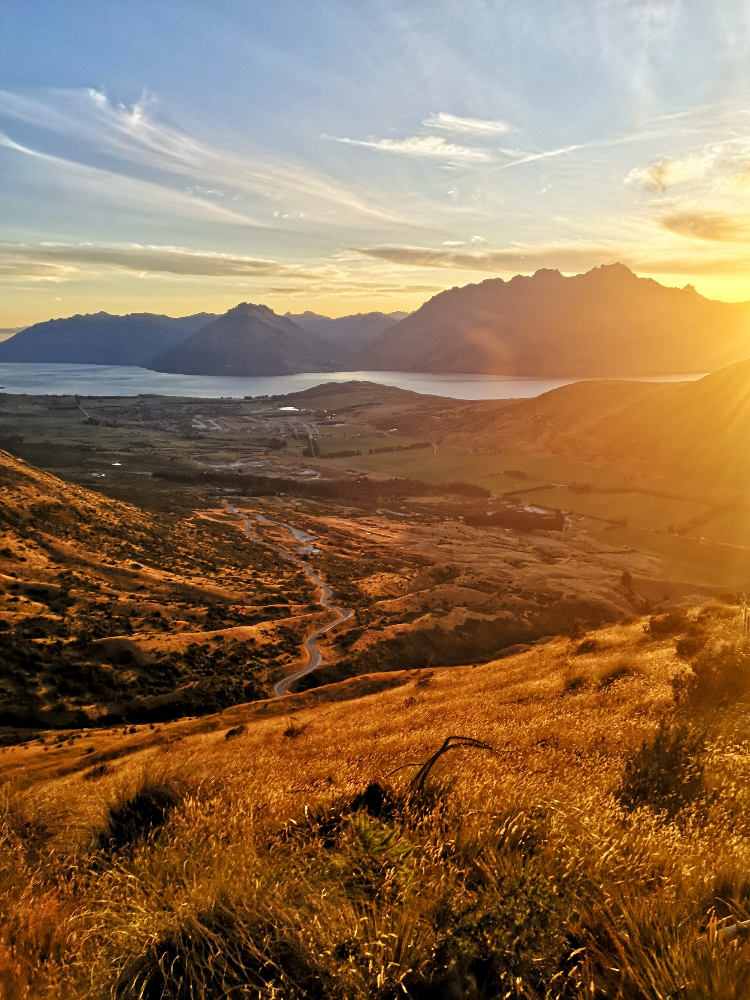
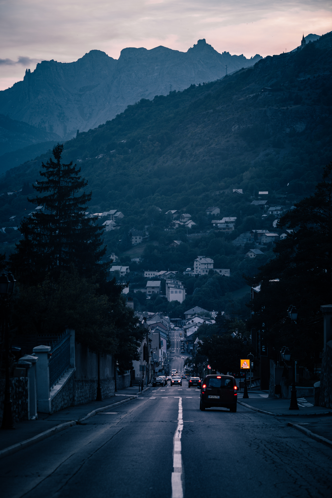
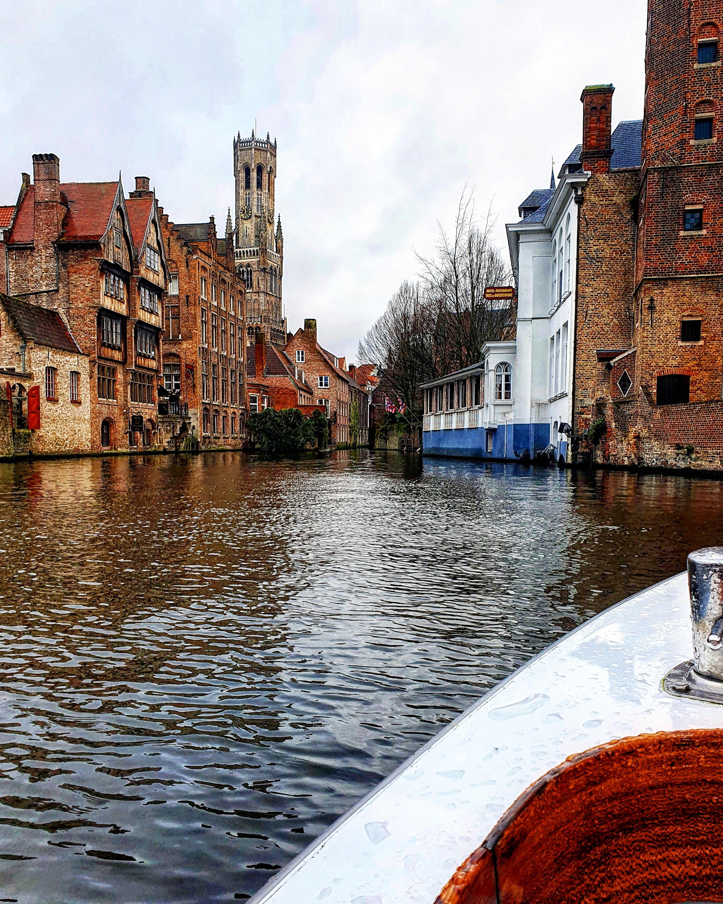
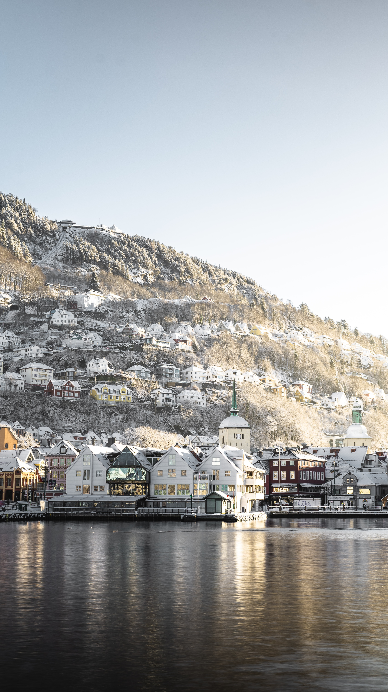

|

Queenstown, NZ
Located in the Western part of NZ,Queenstown can be described as a home away from home. Known as the best location for adrenaline junkies, there's also so much to offer to the more leisure inclined.
|
 Verona, Italy
The city of Verona, known for Shakespeare's plays (including Romeo and Juliet and The Two Gentlemen of Verona) is located in north Italy. The 2nd largest city after Venice, Verona is the perfect destination for travels with interests in the history and arts.
Verona, Italy
The city of Verona, known for Shakespeare's plays (including Romeo and Juliet and The Two Gentlemen of Verona) is located in north Italy. The 2nd largest city after Venice, Verona is the perfect destination for travels with interests in the history and arts.
|

Briançon Hautes-Alpes, France
Briançon is arguably one of the best spots for winter sport enthusiasts. It is a perfect location to visit different ski mountains nearby, and can also visit the Vallée de la Clarée, which is a beautiful nature location right next to the border of Italy. |
|

Bruges, Belgium
A beautiful city in the Northwest of Belgium, Bruges has much to offer. Bruges is another city with rich history and sightseeing options. A tip, to stay budget-friendly, avoid touristy areas to dine in budget! |

Bergen, Norway
Bergen is located on Norway's southwestern coast. Named "The heart of the fjords", it offers a more relaxed experience to travellers compared to larger Norweigan cities. A beautiful city with many different activities, just be sure to bring an umbrella!
|
 Fes, Morocco
Fes, Morocco |